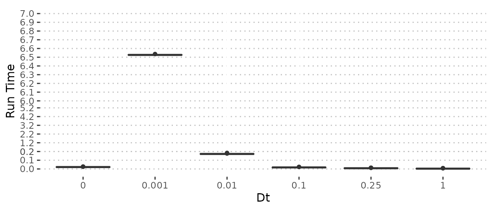

Booster Model: Difference Model
difference_model.RmdTo gain some speed during the fitting process we can convert the complex ODE booster version of nimue into a difference model with a small step size. This is equivalent to using Euler’s method to solve the ODE.
When the model has limited time-varying parameter this method seems to be non-optimal compared to the adaptive step size Dormand-Prince solver we normally use. However, in a set-up with many time-varying parameters, we can explicitly control the step size with a significant increase in speed, at the cost of accuracy.
This vignette will explore the performance and “closeness” of the difference model.
Setup
The difference model is only for use in the fitting procedure, so cannot be accessed normally. Instead, specifying use_difference=TRUE when calling nimue_booster_model will add the difference model to $odin_difference_model where it can be called like $odin_model.
The difference model is written in odin, using the discrete model setup. The model code is automatically generated from the ODE code, simply changing derivatives to updates and scaling time changing parameters and the updates by \(\Delta_t\).
Short-term changes
In the model fitting we only run the model for short periods of time, i.e. a month to fit one Rt term. We will explore this using data from a previous fit to the UK excess mortality data.
dts <- c(0.1^seq(0, 3, by = 1), 0.25)
names(dts) <- dts
#load GBR data
fit <- readRDS(here::here("vignettes", "GBR.Rds"))
fit$squire_model<- nimue_booster_model()
#use first fitted sample
fit$parameters <- c(fit$parameters,
fit$samples[[1]])
#get odin parameters
odin_params <- squire.page:::get_parameters(fit)
update_model_pars <- function(model, params){
suppressWarnings(do.call(model$set_user, params))
}
run_diff_model <- function(model, t, dt){
dt_multi <- as.integer(round(1/dt))
new_t <- t * dt_multi
model$run(new_t)
}
#run up to the first month of
t <- as.integer(seq(0, fit$inputs$data$t_start[2], by = 1))
#perform the ode run
update_model_pars(ode_model, odin_params)
ode_run <- ode_model$run(t)
#difference models
diff_runs <- purrr::map(dts, function(dt){
odin_params$dt <- dt
update_model_pars(diff_model, odin_params)
run_diff_model(diff_model, t, dt)
})
#compare results
ode_index <- squire:::odin_index(ode_model)
diff_index <- squire:::odin_index(diff_model)
extract_var <- function(output, var, model_index){
rowSums(output[,model_index[[var]]])
}
var_of_interest <- "E2"
purrr::map_dfr(diff_runs, ~tibble(
t = t,
value = extract_var(.x, var_of_interest, diff_index)
), .id = "dt") %>%
mutate(dt = as.numeric(dt)) %>%
ggplot(aes(x = t, y = value, colour = dt, group = dt)) +
geom_line(linetype = "dashed") +
geom_line(
data = tibble(
t = t,
ode = extract_var(ode_run, var_of_interest, ode_index)
),
aes(x = t, y = ode, group = NULL), colour = "black", alpha = 0.5
) +
labs(x = "Time", y = var_of_interest, colour = "Dt") +
ggpubr::theme_pubclean() +
scale_colour_viridis_c()
squash_axis <- function(from, to, factor) {
# A transformation function that squashes the range of [from, to] by factor on a given axis
# Args:
# from: left end of the axis
# to: right end of the axis
# factor: the compression factor of the range [from, to]
#
# Returns:
# A transformation called "squash_axis", which is capsulated by trans_new() function
trans <- function(x) {
# get indices for the relevant regions
isq <- x > from & x < to
ito <- x >= to
# apply transformation
x[isq] <- from + (x[isq] - from)/factor
x[ito] <- from + (to - from)/factor + (x[ito] - to)
return(x)
}
inv <- function(x) {
# get indices for the relevant regions
isq <- x > from & x < from + (to - from)/factor
ito <- x >= from + (to - from)/factor
# apply transformation
x[isq] <- from + (x[isq] - from) * factor
x[ito] <- to + (x[ito] - (from + (to - from)/factor))
return(x)
}
# return the transformation
return(scales::trans_new("squash_axis", trans, inv))
}
plot_perf <- function(perf){
max_time <- perf$time %>% unlist() %>% max() %>% as.numeric()
min_max_time <- perf$time[[1 + which.min(dts)]] %>% min() %>% as.numeric()
max_time_2 <- perf$time[[1 + which.min(dts[-which.min(dts)])]] %>% max() %>% as.numeric()
trunc_start <- ceiling(max_time_2 * 10)/10
trunc_end <- floor(min_max_time)
purrr::map_dfr(seq_len(nrow(perf)), ~tibble(
dt = perf$dt[.x],
time = as.numeric(perf$time[[.x]])
)) %>%
ggplot(aes(y = time, x = as.character(dt))) +
geom_boxplot() +
coord_cartesian(ylim = c(0, ceiling(max_time))) +
scale_y_continuous(trans = squash_axis(trunc_start, trunc_end, 10),
breaks = c(seq(0, trunc_start, by = 0.1),
seq(trunc_start, trunc_end, by = 1),
seq(trunc_end, ceiling(max_time), by = 0.1))) +
ggpubr::theme_pubclean() +
labs(x = "Dt", y = "Run Time")
}
perf <- bench::mark(
ode_model$run(t),
run_diff_model(diff_model, t, dts[1]),
run_diff_model(diff_model, t, dts[2]),
run_diff_model(diff_model, t, dts[3]),
run_diff_model(diff_model, t, dts[4]),
run_diff_model(diff_model, t, dts[5]),
check = FALSE, iterations = 20
)
perf$dt <- c(0, dts)
plot_perf(perf)
Comparing the two plots we see that \(\Delta_t = 0.01\) gives the best match with \(\Delta_t = 0.1\) close enough to be useful. However we find that in terms of performance, \(\Delta_t = 0.1\) takes a similar amount of time to the ODE model with only \(\Delta_t = 1\) having significant performance gains. \(\Delta_t = 0.25\) represents a good sweet spot between performance and error.
This period of simulation may not be representative, so we will also look at a period where there are more time-varying parameters i.e. vaccinations are occurring.
sim_t <- fit$parameters$tt_R0[
min(which((fit$parameters$tt_R0 + fit$inputs$start_date) > as.Date("2022-01-01")))
]
#generate ODE simulation up to this time
output <- ode_model$run(c(0, sim_t))[2,]
#setup the initial conditions
update_conditions <- function(params, output){
for(var in stringr::str_subset(names(params), "_0")){
out_var <- stringr::str_remove(var, "_0")
for(age in 1:17){
params[[var]][age,] <- output[stringr::str_detect(names(output), paste0(out_var, "\\[", age, ","))]
}
}
params
}
initial_conds <- update_conditions(odin_params, output)
#ode run
sim_period <- sim_t + seq(0, 14*2, by = 1)
update_model_pars(ode_model, initial_conds)
ode_run <- ode_model$run(sim_period)
#difference runs
diff_runs <- purrr::map(dts, function(dt){
initial_conds$dt <- dt
update_model_pars(diff_model, initial_conds)
run_diff_model(diff_model, sim_period, dt)
})
purrr::map_dfr(diff_runs, ~tibble(
t = sim_period,
value = extract_var(.x, var_of_interest, diff_index)
), .id = "dt") %>%
mutate(dt = as.numeric(dt)) %>%
ggplot(aes(x = t, y = value, colour = dt, group = dt)) +
geom_line(linetype = "dashed") +
geom_line(
data = tibble(
t = sim_period,
ode = extract_var(ode_run, var_of_interest, ode_index)
),
aes(x = t, y = ode, group = NULL), colour = "black", alpha = 0.5
) +
labs(x = "Time", y = var_of_interest, colour = "Dt") +
ggpubr::theme_pubclean() +
scale_colour_viridis_c()
perf <- bench::mark(
ode_model$run(t),
run_diff_model(diff_model, t, dts[1]),
run_diff_model(diff_model, t, dts[2]),
run_diff_model(diff_model, t, dts[3]),
run_diff_model(diff_model, t, dts[4]),
run_diff_model(diff_model, t, dts[5]),
check = FALSE, iterations = 20
)
perf$dt <- c(0, dts)
plot_perf(perf)
Compared to the previous simulation, little has changed in terms of performance, however the error from the difference model is greatly reduced, with \(\Delta_t = 1\) no longer so different from the other. \(\Delta_t = 0.25\) still gives greater performance with decent error.
This error could cumulate. We will explore this by simulating along the Rt changes and updating the initial conditions as we go for the ODE and \(\Delta_t = 0.25\). This is not a perfect representation of the error within the fitting process, since it will be fitted each time.
simulate_model <- function(model, params, fit, dt){
update_model_pars(model, params)
#initial run
dt_multi <- 1/dt
t <- seq(0, fit$parameters$tt_R0[2], 1) * dt_multi
output <- model$run(t)
initial_condition <- update_conditions(params, output[nrow(output), ])
for(i in seq_along(fit$parameters$tt_R0)[-c(1,2)]){
t <- seq(fit$parameters$tt_R0[i - 1], fit$parameters$tt_R0[i], by = 1) * dt_multi
update_model_pars(model, initial_condition)
output <- rbind(
output,
model$run(t)[-1,]
)
initial_condition <- update_conditions(initial_condition, output[nrow(output), ])
}
output
}
odin_params$dt <- 1
start <- Sys.time()
ode_run <- simulate_model(ode_model, odin_params, fit, dt = 1)
ode_time <- base::format(signif(as.numeric(Sys.time() - start), 3))
dt <- 0.25
odin_params$dt <- dt
start <- Sys.time()
diff_run <- simulate_model(diff_model, odin_params, fit, dt = dt)
diff_time <- base::format(signif(as.numeric(Sys.time() - start), 3))
rm(start)
tibble(
t = seq_len(nrow(ode_run)) - 1,
ode = extract_var(ode_run, var_of_interest, ode_index),
diff = extract_var(diff_run, var_of_interest, diff_index)
) %>%
ggplot(aes(x = t)) +
geom_line(aes(y = ode), colour = "red") +
geom_line(aes(y = diff), linetype = "dashed") +
ggpubr::theme_pubclean() +
labs(x = "Time", y = var_of_interest, title = paste0("ODE: ", ode_time, " seconds | Difference: ", diff_time, " seconds"))
Unfortunately the error becomes quite large and the cumulative gain in performance is minor. We won’t use this for the main reports on these grounds, especially considering that we’d need to rerun the model to get the ODE solution at the end. However, the code structure will be left in place in-case we ever move ahead with a difference model or where the ODE fails often (the difference model should never fail).